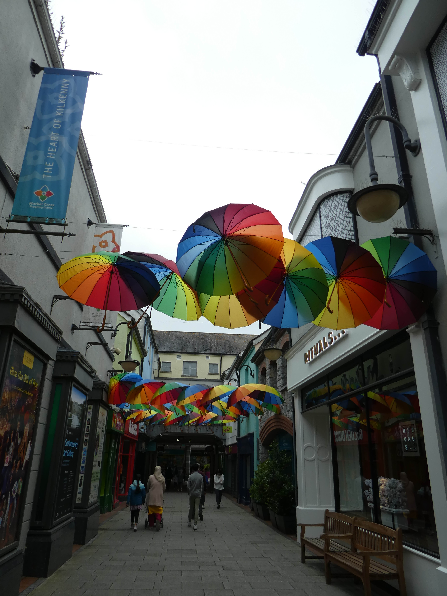

Hello!
How are ya!
This is my portfolio.
I am a Software Developer at MTU, studying Computer Science.
I have a few projects on my GitHub under the Portfolio section!
Let's get to know each other!

Hello!
How are ya!
This is my portfolio.
I am a Software Developer at MTU, studying Computer Science.
I have a few projects on my GitHub under the Portfolio section!
Let's get to know each other!
With 5 years of hospitality experience, I have developed strong communication, teamwork, and problem-solving skills.
I also gained customer service and technical support experience through Apple’s At Home Advisor programme.
Currently, I work as a Student Ambassador for Yugo, organizing events and creating engaging experiences for students and the community.

I’m passionate about content creation and turning creative ideas into engaging digital experiences.
I enjoy developing my skills, exploring new ideas, and combining creativity with technology.
Check out my media portfolio using the link above!

I began my journey into software development at Kerry College, where I developed an interest in programming, problem-solving and creating digital applications. This gave me a foundation in software development and encouraged me to continue learning more about technology.
I am currently in my final year studying Software Development at MTU Cork. Throughout my course, I have developed my understanding of programming concepts, web development, databases and software design.
I particularly enjoy the practical side of development, where I can take an idea and turn it into something functional. My portfolio website is one example of how I have been able to apply what I have learned.
Over 5 years working in hopsitality, Iv worked for major hotels including the Lake hotel and the O Donough Ring collection in Killarney
11 month contact with Apple at home support, where i was taking 35-40 calls a day. This role helped me develop my technical skills.
Currently I am working in Yugo as a student ambassidor, This role I post on their socials, I organize events and help out students!
I enjoy swimming and runing, I tend to go swimming a lot as an after college activity. I find these sports to be generally relaxing.
I have a big love for cars , I especially likes Toyotas, right now i own a 2013 1.33L TR Yaris! Iv been to a lot of rallys including the cork rally and the rally of the lakes.
I enjoy coding and technical stuff! I have build a few small projects including this website and enjoy building products.
Content creation! I enjoy uploading videos to youtube, Tiktok and Instagram. I like being creative as it helps me take my mind off everything and just create! I have linked a youtube video below! Go check it out!


The first cat is Paws, and the second kitten is Binx.
Paws is a tortoiseshell cat with plenty of attitude! She loves finding cosy spots to sit, especially infront of the fireplace.
Binx is a black cat who would happily trade me for a lick treat! She absolutely loves playing with springs and chasing them around.
Together, they're an adorable pair of troublemakers, and both are absolute menaces!
My Main Playlist:
Some of my favorite songs include:
I tend to try upload once a month! Keep an eye out for any new psot!